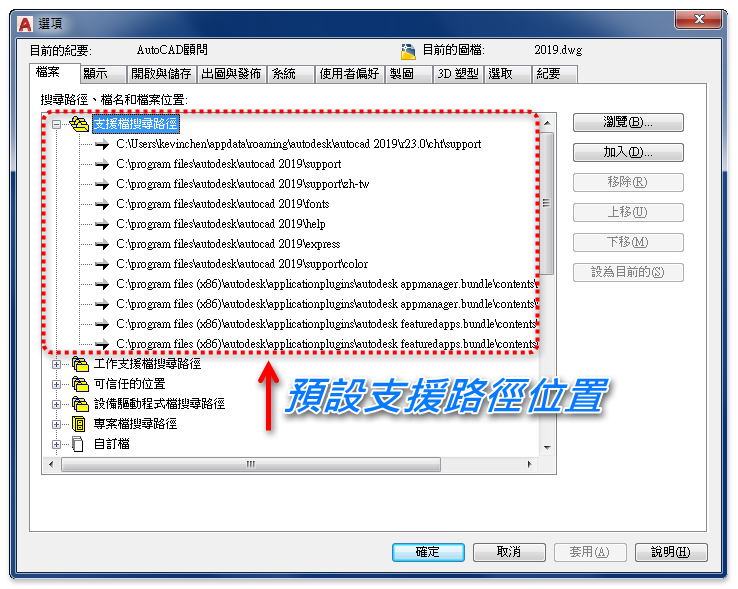
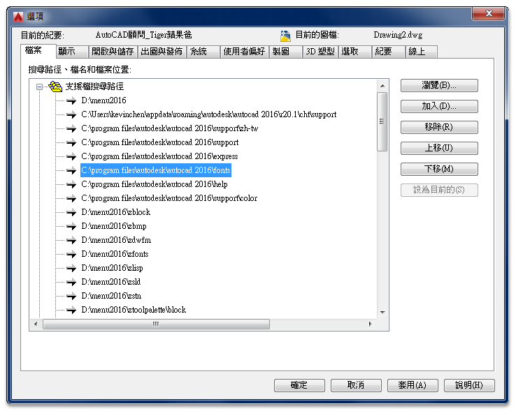
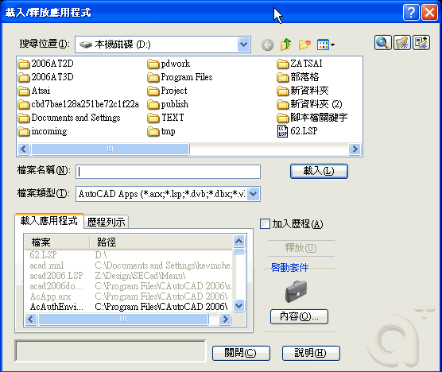

一般安裝完畢的AutoCAD，所有狀態、設定呈現初始值(預設)，而AutoCAD幾乎的所有設定值都是開放的，可因個人的使用習慣來逐一設定，有能力的人甚至可以更改系統及開發程式，而依預設AutoCAD對於自己本身系統的程式，都是透過「支援檔搜尋路徑」才找的到。
輸入Options指令開啟選項畫面
指定一個資料夾，程式要在其中尋找字體、自訂檔、外掛程式、要插入的圖面、線型，以及目前資料夾中不存在的填充線樣式。

舉例:
我們家的管家對於家裡的所有物品擺放位置嘹若指掌，有一天媽媽買了一瓶"蘋果牌超好用清潔劑"，但是媽媽把它放在自己知道的地方，忘記跟管家說了，這樣管家無法使用，當然那個"蘋果牌超好用清潔劑"也就派不上用場。
也就是說當你新建程式或收到外來的檔案，你必須放置在預設的支援路徑下，這樣AutoCAD才能讀取的到，如果想要將外來的自訂檔案跟預設系統做區隔，那你可以先 新增資料夾 放好檔案後，然後使用 加入 來新增支援路徑，爾後AutoCAD在讀取程式檔時，也會搜尋你的 新增資料夾，就像我提供的自訂字型檔裡的教學方法。
所以以後當收到新的字型、線型、線型及外掛程式等等，都必須跟你的AutoCAD說(新增支援路徑)，這樣他才能真正成為你的得力助手喔!
而收到 繪圖機規劃檔*.pc3、與顏色相關的出圖型式檔*.ctb 會必須放在「預設支援路徑」即可。
C:\Program Files\autodesk\AutoCAD "版本"\fonts
C:\Program Files\AutoCAD 版本\fonts（AutoCAD 2011以下版本）

XP系統：C:\Documents and Settings\"使用者帳號"\Application Data\Autodesk\AutoCAD "版本"\"版本代號"\"中文版代號"\plotters
WIN7以上系統：C:\Users\"使用者帳號"\appdata\roaming\autodesk\autocad "版本"\"版本代號"\"中文版代號"\plotters
XP系統：C:\Documents and Settings\"使用者帳號"\Application Data\Autodesk\AutoCAD "版本"\"版本代號"\"中文版代號"\Plot Styles
WIN7以上系統：C:\Users\"使用者帳號"\appdata\roaming\autodesk\autocad "版本"\"版本代號"\"中文版代號"\plotters\plot styles
掛入步驟1：
LISP等外掛程式需要將程式的「資料夾」，加入AutoCAD「支援檔搜尋路徑」後，才可以看到程式的「幻燈片」或是相對應的「DWG檔案」。
掛入步驟2：
接著再使用「APPLOAD指令」掛入LISP等外掛程式(*lsp)，日後重啟AutoCAD程式即可自動載入！

註：自動載入也可以使用 >> [影片]自訂CUI 載入LISP 這個方式。